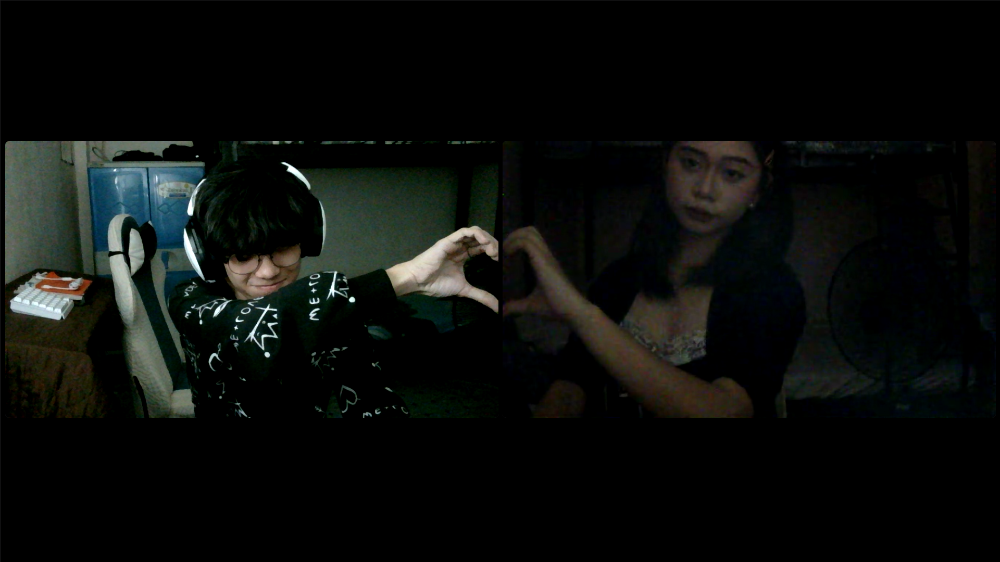

Your goodnights
Two months of them, and I still wait for your last message before I sleep.
A little film for Yana
with the one who feels like home
headphones on, my love
05 September 2026 — 05 November 2026
Two months down, forever to go. Thank you for staying — for making even the ordinary days feel like something worth keeping.
scrollThe time between
since 5 September 2026 · 11:34 PM
Our favorite frame
Some moments don't need a big story. This one just feels like us — quiet, a little silly, and completely at home.
— the frame I keep going back to

New memories
the new ones — month two, in pictures
The archive
drag or scroll sideways
Still my favorite
two months in, and the list keeps growing
Two months of them, and I still wait for your last message before I sleep.
You stayed through my busy days, my tired days, and my quiet ones too.
Even the silent ones feel like home — just you there, and that's enough.
Every “im home na” still makes my whole day feel lighter.
Even the hard conversations, because you'd rather fix us than walk away.
Two months later, still my favorite person. No contest, no hesitation.
A letter for you
Happy 2nd Monthsary
Wifey ko! 💗
Happy 2nd monthsary sa atin. Dalawang buwan na mula noong September 5, 11:34 PM — at ang totoo, mas malalim pa ang pagmamahal ko sa'yo ngayon kaysa noong unang araw na sinabi nating tayo na.
Sa second month natin, hindi na lang kilig ang naramdaman ko. Mas naging tahimik — yung tipong kahit wala tayong ginagawa kundi magkausap sa call, masaya na ako. Yung mga “goodmorning mylove”, “eatwell”, at “update me” na paulit-ulit — hindi sila naging routine. Naging tahanan.
Salamat kasi pinili mo pa rin akong kausapin sa mga araw na pagod ako, at pinakitaan mo ako ng pasensya sa mga araw na hindi ako madaling intindihin. Hindi ko man laging nasasabi, nakikita ko lahat ng iyon. Mahal na mahal kita — ngayon, sa susunod na buwan, at sa lahat ng susunod pa. ✨
I love you!
— Hubby 🥰
Dalawang buwan, at isang buong puso pa rin
Wifey ko,
Kung ang unang buwan ay tungkol sa kilig at pagkilala sa isa't isa, ang pangalawang buwan na ito ay tungkol sa pagpili — pagpili ulit, araw-araw, sa mga araw na exciting kami at sa mga araw na mahirap lang.
Simula noong September 5, 11:34 PM, dumaan tayo sa lahat ng klase ng gabi. May mga gabing puro tawa, may mga gabing puro “sorry”, may mga gabing nauubos ang battery kakatawag, at may mga gabing tahimik lang tayo — pero pareho pa ring nandiyan. Doon ko naintindihan na hindi pala yung malalaking moment ang bumubuo ng relasyon. Yung maliliit na pagpiling manatili ang tunay na bumubuo.
Naaalala ko pa yung website na ginawa ko para sa first monthsary natin — yung maliit na lugar sa internet kung saan nakasulat lahat ng hindi ko kayang sabihin nang tama sa chat. Ngayong second monthsary, ginawa ko ulit. Hindi dahil may bago, kundi dahil dumadami. Dumadami ang memories, dumadami ang rason, at dumadami ang mga pangako kong babalikan natin ang isa't isa.
Hindi naman tayo perpekto. May mga oras pa rin na nagkakaintindihan tayo nang mali, na nagiging mabigat ang tono, na napapagod tayo. Pero ang pinaka-gusto ko sa'tin: hindi tayo natutulog nang galit. Palagi tayong bumabalik. Palagi tayong nag-uusap. Palagi tayong may nag-oo kahit mahirap. At sa akin, iyon na ang pinakamalakas na senyales na totoo ito.
Sa bawat “call ka pag gising mo”, sa bawat “take ur time”, sa bawat “ingat ka palagi” — nandiyan ka. Hindi lang sa masasayang araw, kundi lalo na sa mga araw na kailangan ko. Salamat sa pag-unawa tuwing nakatutok ako sa school at sa thesis, at sa paniniwalang mayroon ka sa akin kahit hindi pa ako naniniwala sa sarili ko.
At kahit magkalayo tayo, kahit gaano pa katagal bago tayo magkita — alam mo ba? Masaya na ako. Kasi ang mahalaga sa akin ay ang ikaw, hindi ang distansya. Yung simpleng alam kong nandiyan ka, sapat na.
“Hindi tama ang isang buwan lang para sabihing mahal kita. Kaya heto — pangalawang buwan, parehong intensyon: pipiliin pa rin kita, at uunahin pa rin kita.”
Kaya sa second monthsary natin, ito ang pinaka-tapat kong sasabihin: hindi kita iiwan. Hindi yun dahil obligado ako, kundi dahil pinili kita noong September 5, 11:34PM — at pinipili pa rin kita ngayong November 5, at sa lahat ng susunod na buwan.
Wifey ko, you can always open up to me—kapag pagod ka, may mga hinanakit kang kinikimkim, o kailangan mo lang ng kausap. Lagi mong sinasabi na “people come and go,” pero gusto kong malaman mong nandito lang ako para sa'yo kahit anong mangyari. Kapag hindi mo alam kung ano ang gagawin, sasamahan kita at pakikinggan. I can be your shoulder to cry on, your best friend, your partner in crime, your psychiatrist, and your biggest cheerleader to support you all the time. Hindi mo kailangang harapin ang lahat nang mag-isa.
Salamat sa dalawang buwan, Yana. Salamat sa pagmamahal na tahimik pero totoo. Salamat sa bawat “iloveyouuuu” and "imissyou" na hindi mo pinagod. At promise ko — gagawin ko mong proud na pinili mo ako. Sa 3rd, sa 4th, sa 5th, at sa lahat ng darating pa. ✨
— Your Hubby, Koni 🥰
P.S. Laging eatwell at sleepwell, at lagi mong i-update ako — ako ang bahala sa'yo. At kung may gabing pagod na pagod ka na, tandaan mo: “nandito lang ako dadamayan ka hindi lang ngayon — kundi hanggang sa susunod na buwan, at sa mga susunod pa. 💗
Next chapter
and the 4th, and the 5th, and every month after that.
— Koni ♥ Yana